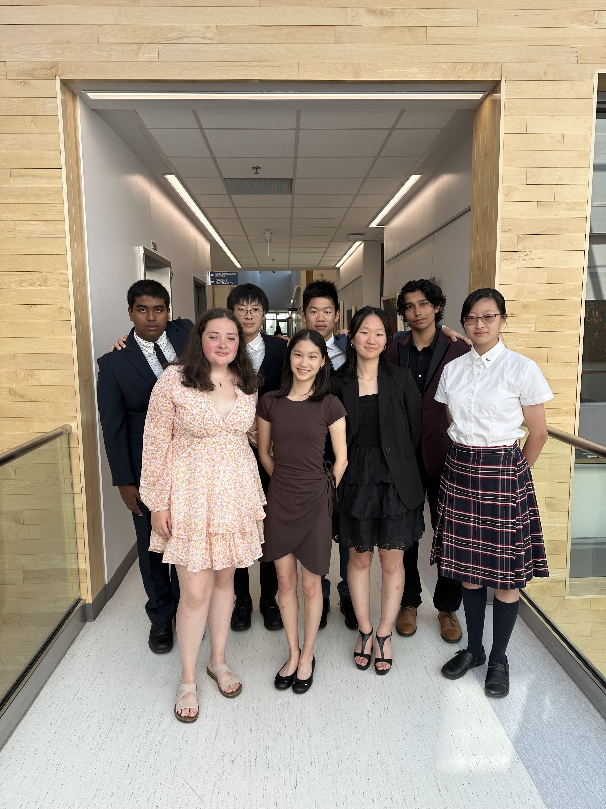
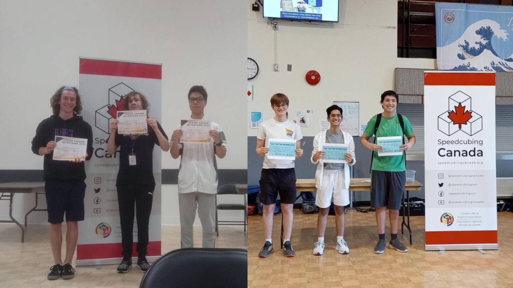
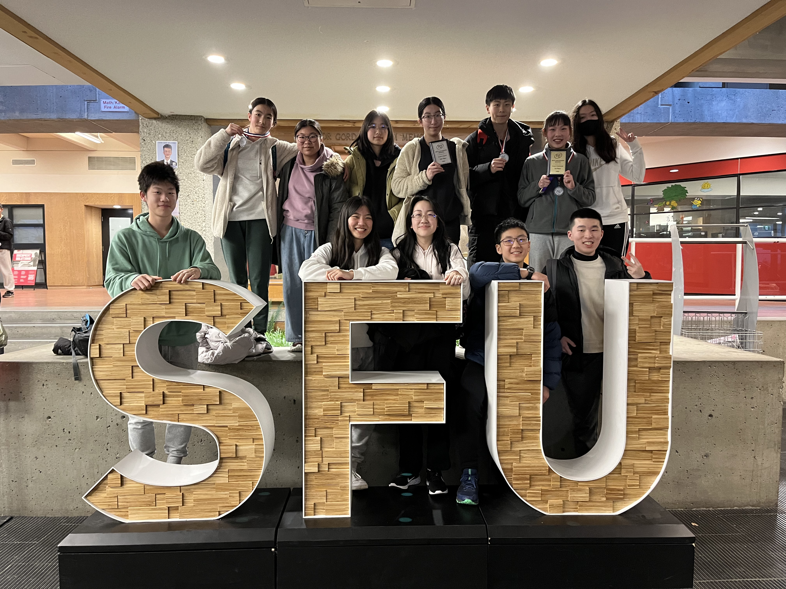
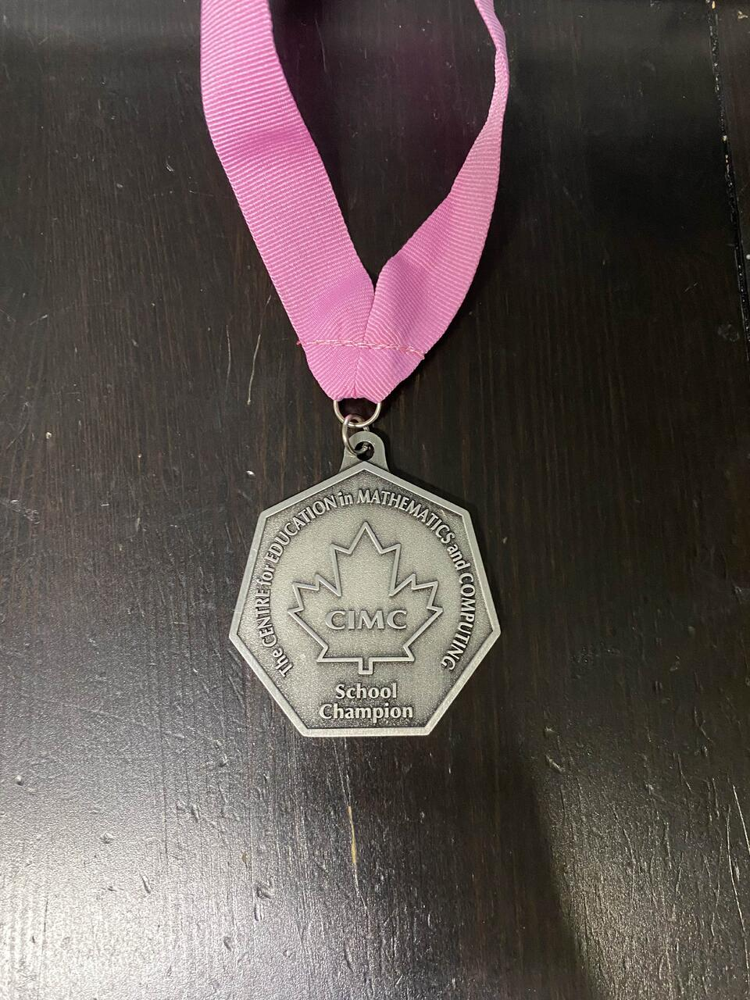
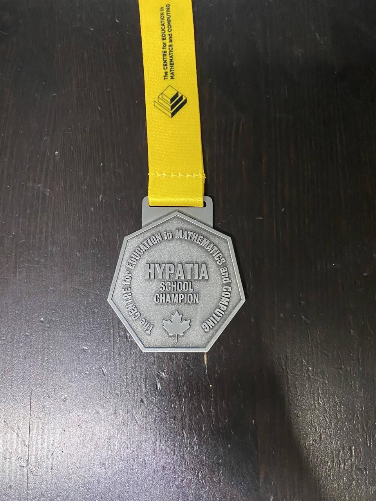

My Education
Richmond Secondary School
September 2020 - Present
Currently a grade 12 student at Richmond Secondary School, completing High School “Dogwood” Diploma
- Completed a “tri-sci” (IB Physics HL 11, IB Chemistry SL 11, Anatomy & Physiology 12)
International Baccalaureate
September 2023 - Present
Currently completing a full International Baccalaureate diploma
- Courses: English Language and Literature A HL, French B SL, Digital Society HL, Physics HL, Chemistry HL, Mathematics Analysis and Approaches HL, Theory of Knowledge, Creativity Activity and Service
- Extended Essay in Digital Society
College Board
September 2022 - Present
- Completed AP Computer Science A with a score of 4
SHAD Canada
July 2023 - July 2023
Attended the SHAD Canada Program on the Lakeheaad University campus and participated in hands-on activities and workshops.
- Worked on a design project, based on a mission prompt, with a team of 8 fellows that would allow for more affordable housing in Toronto continuously throughout the month
- Presented the final project in front of a panel of 6 judges
- Worked on a committee of 11 fellows to run the talent show
- Worked in a team of 5 fellows and videographers to create a 2-minute film project
- Facilitated and guided the spelling and creation of "SHAD LU 23" on the canvas of an open field using 65 fellows; the drone shot image was featured on the SHAD Lakehead website

My Experience
The Richmond News – Paperboy [Paid]
July 2019 - August 2020
Delivered newspapers and samples for The Richmond News weekly
World Cube Association – Competition Organizer [Unpaid]
January 2023 - February 2024
Served as an organizer of multiple speed-cubing competitions
- Worked with Speedcubing Canada to gain publicity for the competition
- Created personalized name tags for each competitor
- Created and managed a competition schedule
- Managed the competition webpage and responded to competitor inquiries
- Worked with CubingOutLoud, a cube retailer based in Ontario, to sponsor the competition's prize pool

World Cube Association – Staff Member [Unpaid]
January 2023 - Present
Volunteer with cometition tasks at every competitoin that I attend.
- Scrambler: applying a pre-generated scramble to competitor puzzles
- Data entry: entering competitor results into live competition software
- Runner: call competitors by name to compete once their puzzle is scrambled
- Judge: supervising the competitor's attempts and recording the result
Math Team – Coach [Volunteer]
September 2023 - Present
- Worked with a small team to select members to represent the school at both the regional and provincial Math Challengers Competition through a tryout process
- Trained a group of approximately 15 students once every week until the competition, with 10 representing the school at the regional level
- Created material for the students to learn and teach from
- Had overall placements of 1st, 2nd, 5th, and 10th at the regional level
- Had 6 students invited to compete at the provincial level
- Supervised the students at both full-day competitions off-site

Math Club – Co-President [Volunteer]
September 2023 - Present
- Worked with teacher sponsor and admin to host over 10 math contests
- Re-introduced the Math Challengers competition
- Introduced the CLMC and Hypatia contests
- Created social media posts and advertised the contests
- Manage and delegate tasks for the team
- Facilitated a hiring process and conducted further interviews
SHAD Canada – Ambassador [Unpaid]
July 2023 - Present
- Promoted and helped students apply to the SHAD Canada program
- Volunteered at various SHAD events
Grade 8 Camp – Leader [Volunteer]
May 2024 - Present
- Led in a smaller group of 3 leaders to facilitate welcome tour for a group of 12 incoming grade 8 students from a larger group
- Collaborated with other group leaders to organize larger group games with upwards of 100 individual grade 8s
- Participated in numerous planning meetings to ensure the smooth execution of event
- Self-organized into smaller groups; created 30 “missions” for scavenger hunt event including detailed descriptions, solutions, and instructions so that any other leader would be able to run the event
- On camp day was in charge of group of 10 and helped them get ready for skating, bowling and a scavenger hunt
- Acted as the “game master” on the day to check valid submissions and award/deduct scores as necessary

IB Orientation – Leader [Volunteer]
May 2024 - October 2024
- Collaborated in numerous groups of various sizes to plan and lead IB Orientation field trip
- Planned activities and did mock runs of the real day for realism and refinement
- Gave guidance and advice to incoming IB students

Robotics-Programming Club – Executive [Volunteer]
March 2022 - Present
- Assists in planning and running meetings
The Morning Mission – Technology Executive [Volunteer]
September 2022 - August 2024
- Worked with a group of designers to create the website based on expectations
- Met deadlines for website creation
My Awards and Certifications
Standard First Aid & CPR/AED Level C
Expires: August 2025
- Certified to perform SFA; valid until August 2025
Richmond Secondary School Honour Roll 2020 - 2024
July 2021, 2022, 2023, 2024
- Achieved Honour Roll at Richmond Secondary School for 4 consecutive years
Certificate of Distinction Gauss 2019
June 2019
- Scored in the top 25% of participants of the Gauss 2019 math contest
Certificate of Distinction Fryer 2022
May 2022
- Scored in the top 25% of participants of the Fryer 2022 math contest
School Champion and Certificate of Distinction CIMC 2022
December 2022
- Scored first overall in the school; 47/60 on the contest overall; in the top 25% of participants of the CIMC 2022 math contest
- Featured on the results page of the Waterloo website

School Champion and Certificate of Distinction Hypatia 2024
May 2024
- Scored first overall in the school; 33/40 on the contest overall; in the top 25% of participants of the Hypatia 2024 math contest
- Featured on the results page of the Waterloo website

Certificate of Distinction CSMC 2023
July 2024
- Scored in the top 25% of participants of the CSMC 2023 math contest